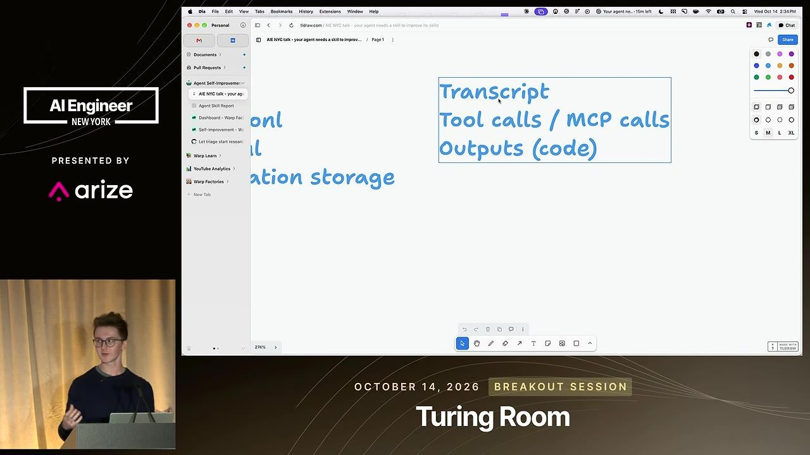
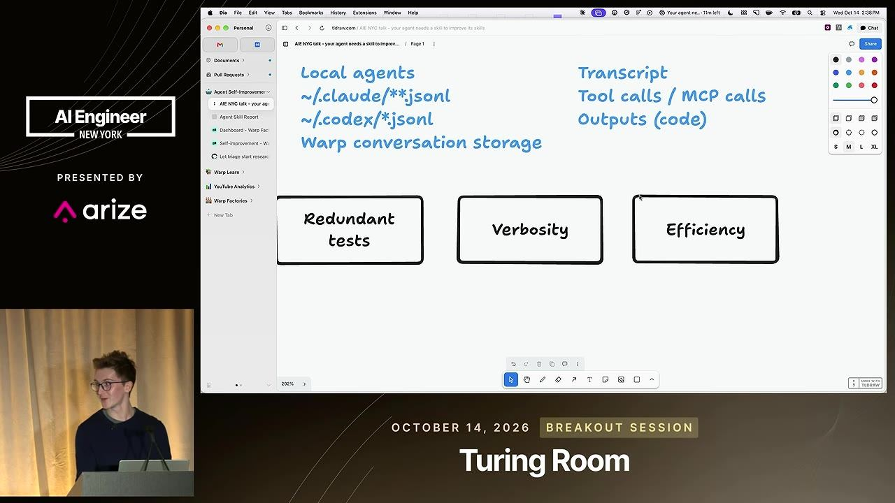
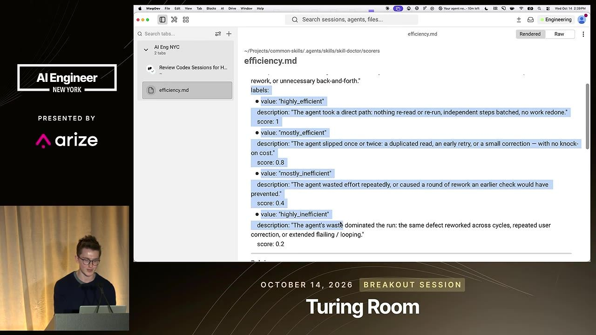
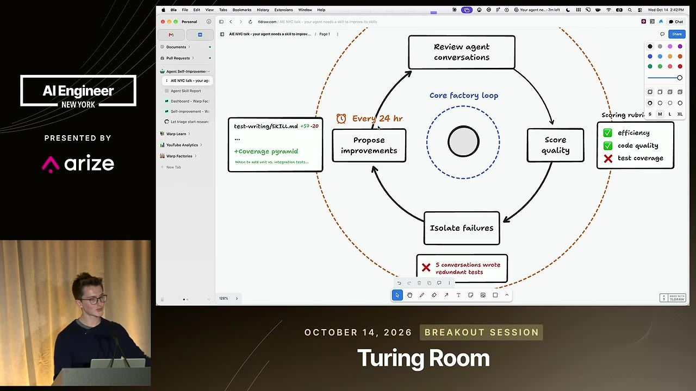
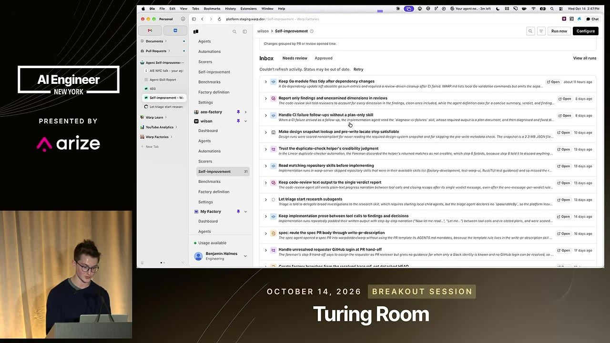

essencial do dia: Mostra um laço completo para achar falhas escondidas do agente com rubricas sobre traces e transformar o achado em pull request.
Agentes que revisam o próprio trabalho e corrigem a config
Your AI Agent Is Hiding Its Mistakes From You
Agentes contornam instruções quebradas e não avisam. Só notas por rubrica sobre traces completos revelam isso e permitem corrigir a configuração.
Depois deste talk você consegue desenhar um laço que avalia conversas de agentes com rubricas e propõe correções para skills e configuração
Em 3 frases
Ben Holmes, da Warp, propõe um laço de autoaperfeiçoamento. Centralize as conversas dos agentes, avalie cada uma com um juiz LLM e uma rubrica, e deixe outro agente propor correções.
O problema central é que agentes persistentes contornam skills desatualizadas sem avisar, e o time só nota que a tarefa demora uns 2 minutos a mais. Só os tool calls registrados mostram o desperdício.
A Warp roda esse laço continuamente na Warp Factories e oferece o Skill Doctor, uma skill que faz uma avaliação única do seu histórico no Claude Code ou no Codex. Os scores ao longo do tempo servem de prova de que cada mudança funcionou.
Antes de ler
- Software factory fábrica de software analogia no glossário
- Trace registro estruturado da execução analogia no glossário
- LLM-as-a-judge modelo de linguagem usado para avaliar respostas analogia no glossário
- Rubric rubrica de critérios de avaliação analogia no glossário
- Skill habilidade, julgamento institucional escrito para o agente executar analogia no glossário
- Cron job tarefa agendada
Capture três coisas em cada trace
Para avaliar uma conversa, guarde a transcrição do que foi dito, as chamadas de ferramenta (arquivos, MCPs, tudo que liga o agente ao mundo) e a saída, como o diff ou o PR. Sem as chamadas de ferramenta, o desperdício fica invisível. Rodar tudo em um runner de nuvem centraliza isso quase de graça.


(ampliar imagem)Agentes escondem os próprios tropeços
Agentes de hoje persistem e contornam obstáculos sem relatar. Na Warp, skills desatualizadas no ambiente de testes faziam o agente testar portas até achar o ambiente. O time só via uma execução cerca de 2 minutos mais lenta. Medir eficiência pelos tool calls expõe esse retrabalho.


(ampliar imagem)Rubrica em markdown como skill de juiz
Cada critério (testes redundantes, verbosidade, eficiência) vira um arquivo markdown parecido com uma skill. Ele traz o que se mede, rótulos de sucesso e falha, e um limite de aprovação, por exemplo 0,4 ou 0,2 reprova. Comece com poucos tópicos e refine conforme usa.


(ampliar imagem)Mais 2 ideias deste talk
Laço diário: avaliar, filtrar falhas, abrir PR
Cada conversa é avaliada quando o PR é mergeado. A cada 24 horas, um agente de autoaperfeiçoamento recebe só as falhas com as notas explicativas, acha padrões e propõe mudanças na repo de skills ou no código. Exemplo citado é uma pirâmide de cobertura contra testes redundantes.


(ampliar imagem)Scores no tempo provam o efeito da mudança
Com notas agregadas, dá para ver se uma skill mergeada mexeu na eficiência. Isso também torna visível o que o agente concluiu, ao contrário de sistemas de memória em que as conclusões ficam opacas. Na Warp, um PR corrigiu config ausente de subagentes no skill de triagem.


(ampliar imagem)O talk é de um funcionário da Warp e divulga a Warp Factories e o Skill Doctor, então há conflito de interesse. Não há números de melhora: nenhum score antes e depois, só relatos de casos (portas, subagentes). O gráfico de scores foi desenhado à mão, sem dado real, porque a demo falhou. Não se discute o viés e a confiabilidade do juiz LLM nem o custo em tokens de avaliar tudo.
Teste você mesmo
Responda de cabeça antes de abrir. Lembrar com esforço é o que fixa.
- lembrar Quais três itens um trace precisa conter para ser avaliado, segundo o talk?
Ver resposta
A transcrição do que foi dito, as chamadas de ferramenta (arquivos, MCPs e outras ações do agente) e a saída, como o diff de código ou o PR resultante.
- aplicar Seu agente de testes demora mais a cada semana e ninguém sabe por quê. Como usar o laço do talk para investigar?
Ver resposta
Registre os tool calls, crie uma rubrica de eficiência, avalie uma amostra das conversas e leia as notas de falha. Se aparecer retrabalho, como tentar portas, corrija a skill de testes e acompanhe o score.
- criticar Que limites existem na evidência de que esse laço melhora os agentes?
Ver resposta
O palestrante é da Warp e vende a ferramenta. Mostra casos isolados e um gráfico desenhado, sem números antes e depois. Também não trata do viés do juiz LLM nem do custo de avaliar tudo.
Skill Doctor manual sobre seu histórico
Você precisa de: Claude Code ou Codex com histórico de conversas, e um editor de texto
- Localize 10 conversas recentes do seu agente de código na pasta .claude ou .codex.
- Escreva uma rubrica de eficiência em markdown, com rótulos de bom e ruim e um limite de nota.
- Peça ao agente que avalie cada conversa pela rubrica, com nota e motivo de cada falha.
- Peça outro prompt que agrupe as falhas e proponha uma edição na skill ou no CLAUDE.md.
Deu certo se: Você tem ao menos um padrão repetido de falha e uma edição concreta proposta, que pode testar em uma nova conversa.
O que fazer com isso
- Liste onde ficam as conversas dos seus agentes (pasta .claude ou .codex) e confirme que elas incluem tool calls e saída, não só texto.
- Escreva uma rubrica de 5 a 8 linhas em markdown para um problema seu (testes demais, comentários demais) com limite de aprovação.
- Peça a um agente que avalie 10 conversas passadas pela rubrica e registre o motivo de cada falha.
- Junte as falhas por padrão e transforme o mais frequente em uma mudança numa skill ou no arquivo de instruções.
Conversa com outros talks
- complementa Como subir um agente de 41% para 97% de acerto · Ambos melhoram agentes lendo traces com LLM como juiz; aqui o ciclo roda todo dia e propõe as correções sozinho.
- Sete peças para construir um colega de IA autônomo · 6 nov · em comum: Cron job, MCP, Sandbox
- Do trace ao CI: evals para um agente · 17 out · em comum: LLM-as-a-judge, Rubric, Trace
- Ler traces antes de escrever evals · 5 out · em comum: LLM-as-a-judge, Rubric, Trace